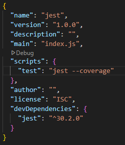
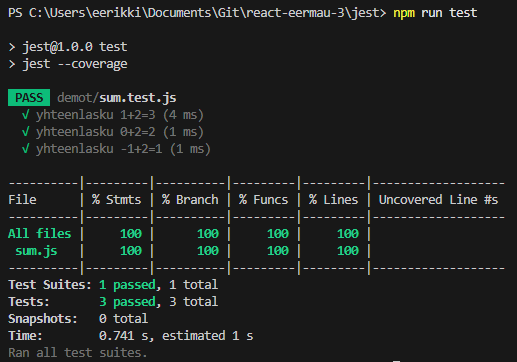

Yksikkötestaus ja JEST-demo
Ympäristön asentaminen
Tee GitHub-repoon kansio jest. Siirry kansioon ja alusta uusi node.js-projekti.
npm init
Asenna JEST, --save-dev tallettaa jest-kirjaston package.json-tiedostoon talteen.
npm install --save-dev jest
Testin luonti
Lisää kandio demot ja luo sinne tiedosto sum.js sekä sum.test.js. Tehdään JavaScript-ohjelma yhteen tiedostoon ja sitä testaavat yksikkötestit toiseen.
sum.js:
const sum = (a, b) => {
return a + b;
}
module.exports = sum;
sum.test.js-tiedostossa otetaan käyttöön sum-funktio ja laaditaan kolme testiä yhteenlaskulle:
const sum = require('./sum');
test('yhteenlasku 1+2=3', () => {
expect(sum(1, 2)).toBe(3);
});
test('yhteenlasku 0+2=2', () => {
expect(sum(0, 2)).toBe(2);
});
test('yhteenlasku -1+2=1', () => {
expect(sum(-1, 2)).toBe(1);
});
Lisää package.json-tiedostoon oikea testauskomento:

"scripts": {
"test": "jest --coverage"
},
Aja testit komentokehotteessa:
npm run test

Poikkeuksen heittäminen
Funktio toimii nyt oikeilla arvoilla mutta on hyvä varautua virhetilanteisiin (= poikkeuksiin). Kun funktio kohtaa poikkeuksen se heittää virheen, koodissa voidaan varautua tähän.
sum.js-tiedostossa tarkistetaan alussa ovatko syötteet lukuja:
if (typeof a !== 'number' || typeof b !== 'number') {
throw new Error('Virheellinen syöte!');
}
sum.test.js-testitiedostossa testataan toimiiko poikkeuksen heittäminen jos jompi kumpi syöte on virheellinen tai jos syötteet puuttuvat kokonaan:
test('virheellinen syöte', () => {
expect(() => sum(1, 'b')).toThrow('Virheellinen syöte!');
})
test('virheellinen syöte', () => {
expect(() => sum('a', 2)).toThrow('Virheellinen syöte!');
})
test('virheellinen syöte', () => {
expect(() => sum()).toThrow('Virheellinen syöte!');
})